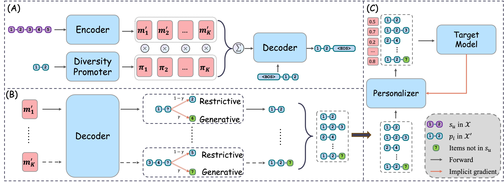
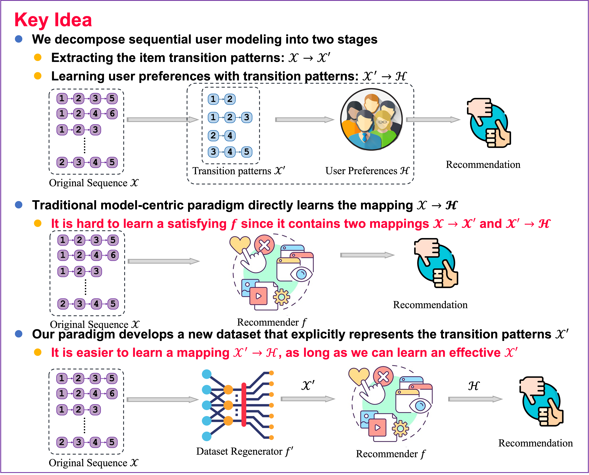

Official implementation for Dataset Regeneration for Sequential Recommendation.

1. Paper
Mingjia Yin, Hao Wang, Wei Guo, Yong Liu, Suojuan Zhang, Sirui Zhao, Defu Lian, and Enhong Chen. Dataset Regeneration for Sequential Recommendation. In Proceedings of the 30th ACM SIGKDD Conference on Knowledge Discovery and Data Mining (KDD 2024), pages 3954-3965, Barcelona, Spain, 2024.
Paper / arXiv / PDF / Project Page / Poster / Slides / Citation
DR4SR introduces a data-centric view for sequential recommendation: instead of only designing stronger models for fixed data, it regenerates training datasets to improve the quality of sequential signals. The paper received the KDD 2024 Best Student Paper award.
2. Highlights
- Proposes dataset regeneration for sequential recommendation.
- Supports both DR4SR and DR4SR+ training flows.
- Provides preprocessed datasets under
dataset/. - Includes the KDD 2024 poster and presentation slides.
- Builds on RecStudio, Seq2Pat, and AuxiLearn components.
3. Method At A Glance

DR4SR builds a pre-training dataset, learns item embeddings, pre-trains a data regenerator, obtains regenerated sequences through hybrid inference, and trains downstream sequential recommendation models on regenerated data.
4. Repository Structure
.
├── 1.Build_pretraining_dataset.py
├── 2.Pretrain_regenerator.py
├── 3.Hybrid_inference.py
├── run.py
├── configs/ # Model and dataset configs
├── dataset/ # Preprocessed datasets and preprocessing notebooks
├── model/ # Sequential recommendation models
├── assets/ # Framework, poster, and slides
└── docs/ # GitHub Pages project page5. Installation
The paper used:
python == 3.9.19
torch == 1.13.1+cu117
seq2pat == 1.4.0
numpy == 1.26.4
scipy == 1.12.0Install with:
conda create -n DR4SR python=3.9
conda activate DR4SR
pip install -r requirements.txt6. Data
Preprocessed datasets are uploaded under dataset/. To reproduce preprocessing:
- Download Amazon and Yelp datasets and place them under
dataset/. - Run the preprocessing notebooks:
- Amazon:
dataset/preprocess_amazon.ipynb - Yelp:
dataset/preprocess_yelp.ipynb
- Amazon:
7. Quick Start
Model-agnostic dataset regeneration:
# 0. Select a target dataset, e.g., Amazon-toys.
DATASET=amazon-toys
DATA_ALIAS=toy
ROOT_PATH=./dataset/${DATASET}/${DATA_ALIAS}/
# 1. Build the pre-training dataset.
python 1.Build_pretraining_dataset.py --root_path $ROOT_PATH
# 2. Generate pre-trained item embeddings.
python run.py --model SASRec --dataset $DATASET
# 3. Move the corresponding checkpoint to the dataset folder.
mv CKPT_FILE_PATH ${ROOT_PATH}/pre-trained_embedding.ckpt
# 4. Pre-train the data regenerator.
python 2.Pretrain_regenerator.py --root_path $ROOT_PATH --K 5
# 5. Obtain regenerated dataset with hybrid inference.
python 3.Hybrid_inference.py --root_path $ROOT_PATH
# 6. Optional: transform datasets for FMLP with dataset/dataset_transform.ipynb.
# 7. DR4SR: train a target model on regenerated data.
# Set train_file to '_regen' in configs/amazon-toys.yaml.
python run.py -m SASRec -d amazon-toys
# 8. DR4SR+: train a target model on regenerated and personalized data.
# Set sub_model in configs/metamodel.yaml.
python run.py -m MetaModel -d amazon-toys8. Reproducing Results
For original datasets, set train_file to _ori. For regenerated datasets, set train_file to _regen in the corresponding dataset config.
FMLP uses pre-padding, while other target models use post-padding. Run dataset/dataset_transform.ipynb before using FMLP, which follows the original FMLP implementation convention.
9. Configuration Notes
- Dataset configs:
configs/amazon-toys.yaml,configs/amazon-sport.yaml,configs/amazon-beauty.yaml, andconfigs/yelp.yaml. - Target model configs:
configs/sasrec.yaml,configs/gru4rec.yaml,configs/fmlp.yaml,configs/gnn.yaml, andconfigs/metamodel.yaml. - Regenerator checkpoint expected path:
${ROOT_PATH}/pre-trained_embedding.ckpt.
10. Experimental Highlights

The paper shows that improving training data can complement model-centric improvements in sequential recommendation. DR4SR and DR4SR+ evaluate this idea across multiple datasets and target models.
11. Notes For Maintainers
- Keep poster and slides available under
assets/because they are linked from the paper section. - Preserve the numbered scripts; the README quick start follows their execution order.
- If a multiprocessing version of hybrid inference is added, document it next to step 5.
12. Citation
If you find DR4SR useful, please cite:
@inproceedings{yin2024dataset,
title={Dataset Regeneration for Sequential Recommendation},
author={Yin, Mingjia and Wang, Hao and Guo, Wei and Liu, Yong and Zhang, Suojuan and Zhao, Sirui and Lian, Defu and Chen, Enhong},
booktitle={Proceedings of the 30th ACM SIGKDD Conference on Knowledge Discovery and Data Mining},
pages={3954--3965},
year={2024},
doi={10.1145/3637528.3671841}
}13. Contact
- First author: Mingjia Yin.
- Repository questions: please open a GitHub issue in this repository.
14. Acknowledgments
This project is primarily built upon RecStudio. The pre-training dataset construction relies on Seq2Pat. The implicit gradient optimization framework is modified from AuxiLearn. We thank the developers of these repositories for their contributions.